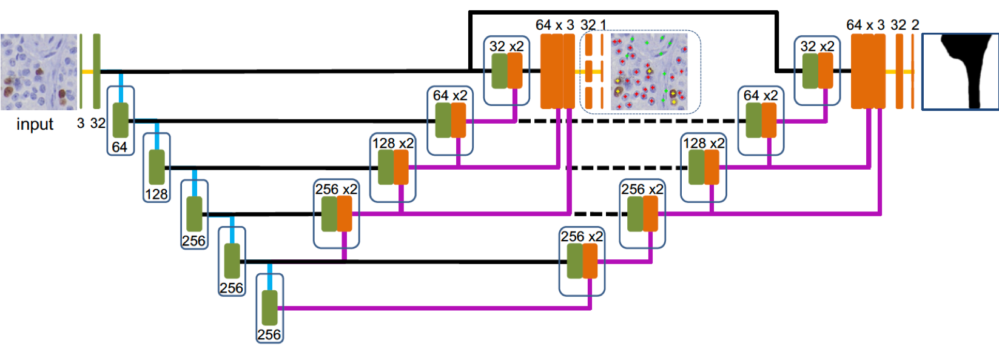
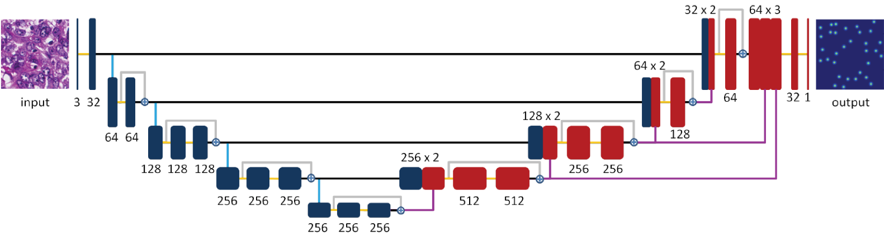

KiNet: A Computerized Method for Ki67 Labeling Index Assessment
The central goal of this project is to develop a computerized method, namely KiNet, for Ki67 labeling (LI) index assessment in Ki67 immohistochemistry stained images of gastrointestinal and pancreatic neuroendocrine tumors (NETs). We use deep neural networks to implement an end-to-end learning method to identify different types of nuclei (i.e., immunopositive tumor, immunonegative tumor and non-tumor) for Ki67 LI measurement.Source codes: [KiNet_v1]
|  |
Pixel-to-pixel Learning with Weak Supervision for Single-stage Nucleus Recognition in Ki67 Images Fuyong Xing, Toby C. Cornish, Tell Bennett, Debashis Ghosh, Lin Yang IEEE Transactions on Biomedical Engineering, vol. 66, no. 11, pp. 3088-3097, 2019 |
| | |

|
Adversarial Domain Adaptation and Pseudo-Labeling for Cross-Modality Microscopy Image Quantification Fuyong Xing, Tell Bennett, Debashis Ghosh The 22nd International Conference on Medical Image Computing and Computer Assisted Intervention (MICCAI), vol. 11764, pp.740-749, 2019 |
| | |
|  |
Towards Pixel-to-pixel Deep Nucleus Detection in Microscopy Images Fuyong Xing, Yuanpu Xie, Xiaoshuang Shi, Pingjun Chen, Zizhao Zhang, Lin Yang BMC Bioinformatics, 20:472, 2019 |
| | |

|
Generative Adversarial Domain Adaptation for Nucleus Quantification in Images of Tissue Immunohistochemically Stained for Ki-67 Xuhong Zhang, Toby C. Cornish, Lin Yang, Tellen D. Bennett, Debashis Ghosh, Fuyong Xing JCO Clinical Cancer Informatics, vol. 4, pp. 666-679, 2020 [Codes] |
| | |

|
Bidirectional Mapping-Based Domain Adaptation for Nucleus Detection in Cross-Modality Microscopy Images Fuyong Xing, Toby C. Cornish, Tellen D. Bennett, Debashis Ghosh accepted to IEEE Transactions on Medical Imaging, 2020 |
| |